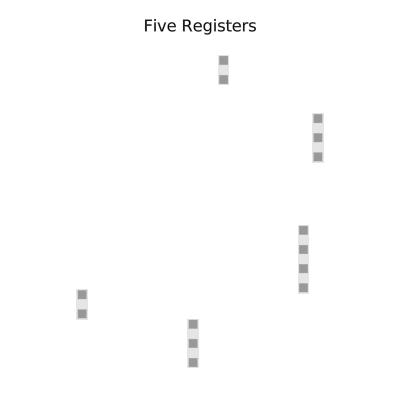
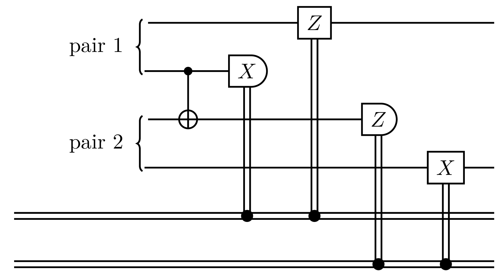
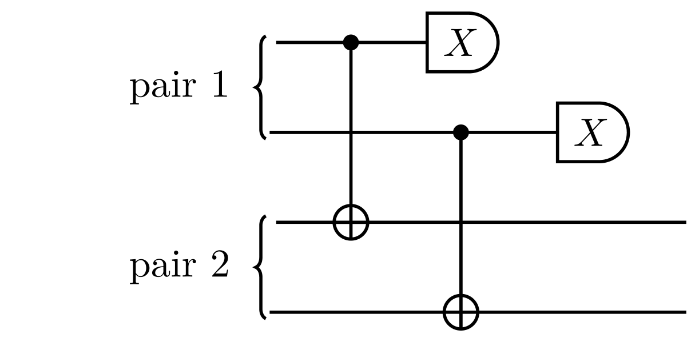
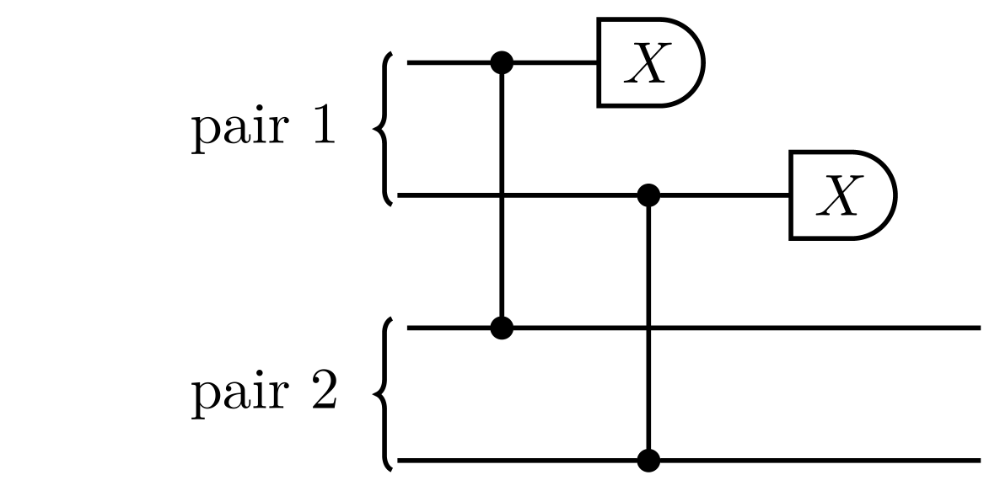

First Generation Quantum Repeater
There is a convenient classification of quantum repeaters by their logical capabilities[1]. The first, simplest, generation of quantum repeaters involves the generation of physical (unencoded) entangled qubits between neighboring nodes, followed by entanglement swap and entanglement purification operation. No error correcting codes are employed and establishing of a link is a probabilistic process.
We will build a simplistic simulator for such a network.
- We will employ Schroedinger representation (Schroedinger, Lindblad, and other master equation will be used behind the scenes, but we will not need to work at that low level);
- We will consider a chain of quantum repeater nodes of various sizes (number of qubits);
- The goal would be to entangle the extreme ends of the chain:
- By directly entangling nearest neighbors;
- Followed by entanglement swaps to extend the links;
- And entanglement purification to increase the quality of the links.
For organizing the simulation and simplifying the digital and analog quantum dynamics, we will use the star of QuantumSavory.jl, namely the Register data structure. For a convenient data structure to track per-node metadata in a graph (network) we will use the RegisterNet structure.
Moreover, behind the scenes QuantumSavory.jl will use:
SimJulia.jlfor discrete event scheduling and simulation;Makie.jltogether with our custom plotting recipes for visualizations;QuantumOptics.jlfor low-level quantum states.
The user does not need to know much about these libraries, but if they wish, it is easy for them to peek behind the scenes and customize their use.
The full simulation script is available at the bottom.
The Underlying Data Structures
While the quantum dynamics would be encapsulated in a Register data structure, it is convenient to also set up structures that track the overall topology and events on the network. Our preferred way to do that is to use the RegisterNet structure, which lets you construct a graph and attach arbitrary meta-data to each edge and vertex. While this is not required for using QuantumSavory.jl, it is convenient, and we provide a lot of debugging tools that assume the use of this structure.
Given an array of register sizes, e.g. sizes = [2,3,4,3,2], we will create a linear graph, where each node has the prescribed number of qubits, e.g.:

The RegisterNet would contain, on each node:
- a
Registerof the appropriate size; - an array of tuples keeping track of whom each qubit in the register is entangled to (as the
:enttrackerproperty); - an array of locks (from
SimJulia.jl) keeping track of whether a process is happening on the given qubit (as the:locksproperty).
To see how to visualize these data structures as the simulation is proceeding, consult the Visualizations page.
To see how to define imperfections, noise processes, and background events, consult the Sub-system Properties page.
Click to expand and see code used to set up the meta-graph and registers
"""Creates the datastructures representing the simulated network"""
function simulation_setup(
sizes, # Array giving the number of qubits in each node
T2 # T2 dephasing times for the qubits
;
representation = QuantumOpticsRepr # Representation to use for the qubits
)
R = length(sizes) # Number of registers
# A scheduler datastructure for the discrete event simulation
sim = Simulation()
# All of the quantum register we will be simulating
registers = Register[]
for s in sizes
traits = [Qubit() for _ in 1:s]
repr = [representation() for _ in 1:s]
bg = [T2Dephasing(T2) for _ in 1:s]
push!(registers, Register(traits,repr,bg))
end
# A graph structure defining the connectivity among registers
# It is not necessary to use such a structure, however, it is a convenient way to
# store data about the simulation (and we have created helper plotting functions
# expecting such a structure).
graph = grid([R])
network = RegisterNet(graph, registers) # A graphs with extra "meta data"
# Add a register datastructures and event locks to each node.
for v in vertices(network)
# Create an array specifying whether a qubit is entangled with another qubit
network[v,:enttrackers] = Any[nothing for i in 1:sizes[v]]
# Create an array of locks, telling us whether a qubit is undergoing an operation
network[v,:locks] = [Resource(sim,1) for i in 1:sizes[v]]
end
sim, network
endEntangler
The first set of processes we need is the "entanglers" that enable nearest-neighbor entanglement generation:
They run in parallel on each edge of the graph, set up by an invocation similar to the following:
for (;src, dst) in edges(network)
@process entangler(sim, network, src, dst, ...)
endAs seen in the following flow chart, the entangler repeatedly checks for available pairs of unused qubit slots and attempts to entangle them.
on node A and B] B{Are there
unused qubits on
node A and B?} A --> B B --No--> C[Wait a bit...] C --> B B --Yes--> D([Lock the
available qubits]) D --> E[Run entanglement
generation] E --> F[Write down
who was entangled] F --> G([Unlock the
qubits]) G --> B
Click to see the implementation of the Entangler process
@resumable function entangler(
sim::Environment, # The scheduler for all simulation events
network, # The graph of quantum nodes
nodea, nodeb, # The two nodes which we will be entangling
noisy_pair, # A raw entangled pair
entangler_wait_time,# The wait time in case all qubits are "busy"
entangler_busy_time # How long it takes to establish entanglement
)
while true
ia = findfreequbit(network, nodea)
ib = findfreequbit(network, nodeb)
if isnothing(ia) || isnothing(ib)
@yield timeout(sim, entangler_wait_time)
continue
end
locka = network[nodea,:locks][ia]
lockb = network[nodeb,:locks][ib]
@yield request(locka) & request(lockb)
registera = network[nodea]
registerb = network[nodeb]
@yield timeout(sim, entangler_busy_time)
initialize!((registera[ia],registerb[ib]),noisy_pair; time=now(sim))
network[nodea,:enttrackers][ia] = (node=nodeb,slot=ib)
network[nodeb,:enttrackers][ib] = (node=nodea,slot=ia)
@simlog sim "entangled node $(nodea):$(ia) and node $(nodeb):$(ib)"
release(locka)
release(lockb)
end
end
"""Find an uninitialized unlocked qubit on a given node"""
function findfreequbit(network, node)
register = network[node]
locks = network[node,:locks]
regsize = nsubsystems(register)
findfirst(i->!isassigned(register,i) & isfree(locks[i]), 1:regsize)
endNotice that the entangler uses the initialize! function to set the state of certain registers, but we never need to explicitly construct the numerical representation of these kets. Rather, we use the symbolic algebra system of QuantumClifford.jl, and let the simulator automatically convert the symbolic expression into numerical density matrices. This conversion was governed by the choice of representation = QuantumOpticsRepr. Here is one possible symbolic definition of a noisy_pair:
const perfect_pair = (Z1⊗Z1 + Z2⊗Z2) / sqrt(2)
const perfect_pair_dm = SProjector(perfect_pair)
const mixed_dm = MixedState(perfect_pair_dm)
noisy_pair_func(F) = F*perfect_pair_dm + (1-F)*mixed_dmThe symbolic-expression-to-density-matrix conversion is cached inside of the symbolic expression, so that it does not need to be recomputed each time.
Swapper
Once we have the raw nearest-neighbor entanglement, we can proceed with swap operations that link two Bell pairs that share one common node into a longer Bell pair:
They run in parallel on each vertex of the graph, set up by an invocation similar to the following:
for node in vertices(network)
@process swapper(sim, network, node, ...)
endThe Swapper working on a given node simply checks whether there are any qubits on that node that are entangled with other nodes, both on the left and right of the current node. If such qubits are found, the entanglement swap operation is performed on them, as seen in this flowchart.
on node A] B{Are there
qubits entangled with A
both on the left and right
of A?} A --> B B --No--> C[Wait a bit...] C --> B B --Yes--> D([Lock the
local qubits]) D --> E[Run entanglement
swapping] E --> F[Write down
how the entanglement
was redistributed] F --> G([Unlock and erase
the local qubits]) G --> B
The entanglement swap operation is performed through the following simple circuit, which entangles the two local qubits belonging to two separate Bell pairs, and then measures them:
The code implementing such a circuit looks like the following (where localslot denotes register slots on which swapping happens, and remslot denotes remote registers on the left and right):
apply!((localslot1, localslot2), CNOT; time=time)
xmeas = project_traceout!(localslot1, X)
zmeas = project_traceout!(localslot2, Z)
if xmeas==2
apply!(remslot1, Z)
end
if zmeas==2
apply!(remslot2, X)
endClick to see the implementation of the Swapper process
@resumable function swapper(
sim::Environment, # The scheduler for all simulation events
network, # The graph of quantum nodes
node, # The node on which the swapper works
swapper_wait_time,# The wait time in case there are no available qubits for swapping
swapper_busy_time # How long it takes to perform the swap
)
while true
qubit_pair = findswapablequbits(network,node)
if isnothing(qubit_pair)
@yield timeout(sim, swapper_wait_time)
continue
end
q1, q2 = qubit_pair
locks = network[node, :locks][[q1,q2]]
@yield mapreduce(request, &, locks)
reg = network[node]
@yield timeout(sim, swapper_busy_time)
node1 = network[node,:enttrackers][q1]
reg1 = network[node1.node]
node2 = network[node,:enttrackers][q2]
reg2 = network[node2.node]
swapcircuit(reg[q1], reg[q2], reg1[node1.slot], reg2[node2.slot]; time=now(sim))
network[node1.node,:enttrackers][node1.slot] = node2
network[node2.node,:enttrackers][node2.slot] = node1
network[node,:enttrackers][q1] = nothing
network[node,:enttrackers][q2] = nothing
@simlog sim "swap at $(node):$(q1)&$(q2) connecting $(node1) and $(node2)"
release.(locks)
end
end
function swapcircuit(localslot1, localslot2, remslot1, remslot2; time=nothing)
apply!((localslot1, localslot2), CNOT; time=time)
xmeas = project_traceout!(localslot1, X)
zmeas = project_traceout!(localslot2, Z)
if xmeas==2
apply!(remslot1, Z)
end
if zmeas==2
apply!(remslot2, X)
end
end
function findswapablequbits(network,node)
enttrackers = network[node,:enttrackers]
locks = network[node,:locks]
left_nodes = [(i=i,n...) for (i,n) in enumerate(enttrackers)
if !isnothing(n) && n.node<node && isfree(locks[i])]
isempty(left_nodes) && return nothing
right_nodes = [(i=i,n...) for (i,n) in enumerate(enttrackers)
if !isnothing(n) && n.node>node && isfree(locks[i])]
isempty(right_nodes) && return nothing
_, farthest_left = findmin(n->n.node, left_nodes)
_, farthest_right = findmax(n->n.node, right_nodes)
return left_nodes[farthest_left].i, right_nodes[farthest_right].i
endPurifier
Last but not least, there is the Purifier that searches for pairs of nodes that share more than one Bell pair. On such nodes a purification procedure can be performed:
As you can see, not all purification attempts succeed. On some occasions there is a failure and both pairs get discarded as faulty. Each Purifier is running two purification circuits, one after the other, as a single round of purification is incapable of detecting all types of errors. The two circuits being employed are the following:
 If the coincidence measurements fail, all qubits are reset. If the coincidence measurements are correct, the purified pair would have higher fidelity than what it started with. To implement one of these circuits one can write something akin to the following, where regA and regB are the two registers who share two entangled pairs, and pairXqubitX specifies the slot for each of the qubits of each of the pairs:
gate = Gates.CNOT # or Gates.CPHASE
apply!((rega[pair2qa],rega[pair1qa]),gate)
apply!((regb[pair2qb],regb[pair1qb]),gate)
measa = project_traceout!(rega[pair2qa], X)
measb = project_traceout!(regb[pair2qb], X)
if measa!=measb
traceout!(rega[pair1qa])
traceout!(regb[pair1qb])
endThe overall structure of this process is similar to the Entangler and Swapper: repeatedly trying to lock four qubits belonging to two pairs shared by the same nodes, followed by performing the purification procedure.
on nodes A and B] B{Are there
two Bell pairs shared
between A and B?} A --> B B --No--> C[Wait a bit...] C --> B B --Yes--> D([Lock the
corresponding qubits]) D --> E[Run purification
and parity measurement] E --> F{Coincidence
was observed?} F --No--> F1[Reset
all qubits] F --Yes--> F2[Preserve
purified qubits] F1 --> G([Unlock
the qubits]) F2 --> G([Unlock
the qubits]) G --> B
Purification processes are started on all pairs of nodes with an invocation like:
for nodea in vertices(network)
for nodeb in vertices(network)
if nodeb>nodea
@process purifier(sim, network, nodea, nodeb, ...)
end
end
endClick to see the implementation of the Entangler process
@resumable function purifier(
sim::Environment, # The scheduler for all simulation events
network, # The graph of quantum nodes
nodea, # One of the nodes on which the pairs to be purified rest
nodeb, # The other such node
purifier_wait_time,# The wait time in case there are no pairs available for purification
purifier_busy_time # The duration of the purification circuit
)
round = 0
while true
pairs_of_bellpairs = findqubitstopurify(network,nodea,nodeb)
if isnothing(pairs_of_bellpairs)
@yield timeout(sim, purifier_wait_time)
continue
end
pair1qa, pair1qb, pair2qa, pair2qb = pairs_of_bellpairs
locks = [network[nodea,:locks][[pair1qa,pair2qa]];
network[nodeb,:locks][[pair1qb,pair2qb]]]
@yield mapreduce(request, &, locks)
@yield timeout(sim, purifier_busy_time)
rega = network[nodea]
regb = network[nodeb]
gate = (CNOT, CPHASE)[round%2+1]
apply!((rega[pair2qa],rega[pair1qa]),gate)
apply!((regb[pair2qb],regb[pair1qb]),gate)
measa = project_traceout!(rega[pair2qa], X)
measb = project_traceout!(regb[pair2qb], X)
if measa!=measb
traceout!(rega[pair1qa])
traceout!(regb[pair1qb])
network[nodea,:enttrackers][pair1qa] = nothing
network[nodeb,:enttrackers][pair1qb] = nothing
@simlog sim "failed purification at $(nodea):$(pair1qa)&$(pair2qa) and $(nodeb):$(pair1qb)&$(pair2qb)"
else
round += 1
@simlog sim "purification at $(nodea):$(pair1qa) $(nodeb):$(pair1qb) by sacrifice of $(nodea):$(pair1qa) $(nodeb):$(pair1qb)"
end
network[nodea,:enttrackers][pair2qa] = nothing
network[nodeb,:enttrackers][pair2qb] = nothing
release.(locks)
end
end
function findqubitstopurify(network,nodea,nodeb)
enttrackers = network[nodea,:enttrackers]
locksa = network[nodea,:locks]
locksb = network[nodeb,:locks]
enttrackers = [(i=i,n...) for (i,n) in enumerate(enttrackers)
if !isnothing(n) && n.node==nodeb && isfree(locksa[i]) && isfree(locksb[n.slot])]
if length(enttrackers)>=2
aqubits = [n.i for n in enttrackers[end-1:end]]
bqubits = [n.slot for n in enttrackers[end-1:end]]
return aqubits[2], bqubits[2], aqubits[1], bqubits[1]
else
return nothing
end
endRunning the simulations
Now that we have defined the Entangler, Swapper, and Purifier processes, we just need to run the simulation. That is no different from running any other SimJulia.jl simulation, after our custom setup:
sizes = [2,3,4,3,2] # Number of qubits in each register
T2 = 100.0 # T2 dephasing time of all qubits
F = 0.97 # Fidelity of the raw Bell pairs
entangler_wait_time = 0.1 # How long to wait if all qubits are busy before retring entangling
entangler_busy_time = 1.0 # How long it takes to establish a newly entangled pair
swapper_wait_time = 0.1 # How long to wait if all qubits are unavailable for swapping
swapper_busy_time = 0.15 # How long it takes to swap two qubits
purifier_wait_time = 0.15 # How long to wait if there are no pairs to be purified
purifier_busy_time = 0.2 # How long the purification circuit takes to execute
sim, network = simulation_setup(sizes, T2; representation = CliffordRepr)
noisy_pair = stab_noisy_pair_func(F)
for (;src, dst) in edges(network)
@process entangler(sim, network, src, dst, noisy_pair, entangler_wait_time, entangler_busy_time)
end
for node in vertices(network)
@process swapper(sim, network, node, swapper_wait_time, swapper_busy_time)
end
for nodea in vertices(network)
for nodeb in vertices(network)
if nodeb>nodea
@process purifier(sim, network, nodea, nodeb, purifier_wait_time, purifier_busy_time)
end
end
endThen to run the simulation up to time t we just write run(sim, t). If we want to run until the next event, whenever that is, we can do SimJulia.step(sim)
Figures of Merit and Visualizations
These simulations are not particularly useful if we do not track the performance of the quantum network. One convenient way to do that is to compute observables related to the quality of entanglement, e.g., the XX and ZZ correlators. We will compute these correlators for the second pair on the extreme ends of the chain of repeaters:
Notice how the XX observable drops due to the T₂ dephasing experienced by the qubits. And then it goes back up at the occurence of a successful purification (or all the way to zero at failed purifications). Here is what it looks like if we do not perform purification:
The plotting itself is realized with the wonderful Makie.jl plotting library. The figure of merrit is obtained through a call to observable, a convenient method for calculating expectation values of various quantum observables.
Summary of QuantumSavory tools employed in the simulation
We used the Register data structure to automatically track the quantum states describing our mixed analog-digital quantum dynamics.
Much of the analog dynamics was implicit through the use of backgrounds, declaring the noise properties of various qubits.
The digital-ish dynamics was implemented through the use of
initialize!for setting inital states to various qubitsapply!for the application of various gatestraceout!for deleting qubitsproject_traceout!for projective measurements over qubitsobservablefor calculating expectation values of quantum observables
Many of the above functions take the time keyword argument, which ensures that various background analog processes are simulated before the given operation is performed.
Of note is that we also used Makie.jl for plotting, SimJulia.jl for discrete event scheduling, QuantumClifford.jl for efficient simulation of Clifford circuits, and QuantumOptics.jl for convenient master equation integration. Many of these tools were used under the hood without being invoked directly.
Full Code
The entirety of the code necessary for reproducing these results is in the examples folder of the QuantumSavory.jl repository.
Suggested Improvements
- The first and most obvious improvement would be to trigger the various events (Entangler, Swapper, Purifier) from each other, instead of having them all randomly wait and hope the necessary resources are available.
- Calibrating when to perform a purification versus a swap would be important for the performance of the network.
- Balancing what types of entanglement purification is performed, depending on the type of noise experienced, can drastically lower resource requirements.
- Implementing more sophisticated purification schemes can greatly improve the quality of entanglement.